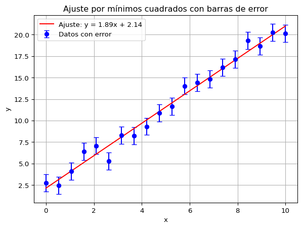
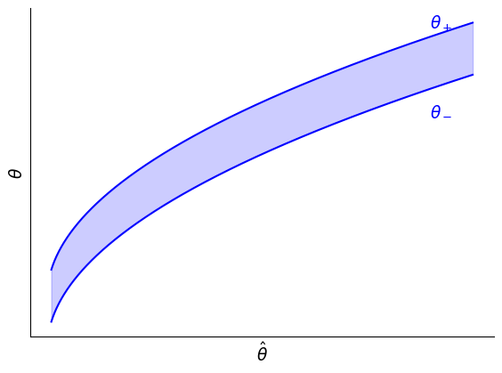
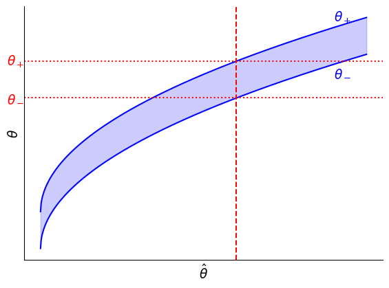

Vamos a estudiar un método más de obtener estimadores. Es tal vez el método más usado por su simplicidad y nos dará pie para motivar varios de los conceptos usados en aprendizaje automático. Este es el método de mínimos cuadrados.
Luego empezaremos a estudiar cómo sacar conclusiones a partir de los datos. Nuestro primer problema es cómo interpretar los resultados de una medición.
Definición del Método de Mínimos Cuadrados
Supongamos que medimos una cantidad \(y\) para cada valor de una variable \(x\). Por ejemplo podemos medir la energía emitida por un cuerpo negro para cada valor de la temperatura. En general \(y = f(x;\theta)\) es una función complicada de \(x\) que depende de uno o más parámetros \(\theta\). Queremos encontrar un estimador para \(\theta\). Ya vimos que podemos usar el estimador de máxima verosimilitud.
En muchos casos no podemos calcular la verosimilitud porque modelar la distribución de probabilidad es extremadamente difícil. Por ejemplo, ¿cuál es la distribución de probabilidad de los precios de los departamentos dada la zona donde se encuentran?
Lo que podemos hacer es minimizar las desviaciones de las predicciones del modelo respecto a los datos. Es decir minimizar el \(\chi^2\)\[
\chi^2 = \sum_{i=1}^n \left[\frac{y_i - f(x_i;\theta)}{\sigma_i}\right]^2\,.
\] Aquí hemos supuesto que las mediciones \(y_i\) son independientes, si no lo son, es necesario considerar la covarianza (ver el libro). Si además suponemos que las mediciones son idénticamente distribuidas, esto es equivalente a minimizar la suma de desviaciones al cuadrado.
Definición
El estimador de mínimos cuadrados es el valor de \(\theta\) que minimiza esta suma de desviaciones al cuadrado \[
\hat{\theta} = \underset{\theta}{\operatorname{argmax}}\sum_{i=1}^n\left[y_i -f(x_i;\theta)\right]^2\,.
\]
Cuando la verosimilitud es una distribución normal la minimización de los mínimos cuadrados es lo mismo que la minimización del logaritmo de la verosimilitud, tal que ambos estimadores coinciden. Cuando la verosimilitud no es gaussiana ambos estimadores serán diferentes. La ventaja del método de mínimos cuadrados es que se puede usar cuando no se conoce la verosimilitud.
Ajuste de Una Recta
El ejemplo más sencillo es cuando \(y = mx\) y queremos encontrar \(m\). Nuestra suma de mínimos cuadrados es \[
L = \sum_{i=1}^n(y_i - mx_i)^2\,,
\] donde \(L\) será nuestra función de coste. Buscando su mínimo \[
\begin{multline}
0 = \frac{\partial L}{\partial m} = -2\sum_i x_i(y_i - \hat{m}x_i) \\ = -2\left(\sum_i x_i y_i\right) + 2\hat{m}\left(\sum_i x_i^2\right) \equiv -2n\overline{xy} + 2\hat{m}n\overline{(x^2)}\,,
\end{multline}
\] que es fácil de resolver \[
\hat{m} = \frac{\overline{xy}}{\overline{(x^2)}}\,.
\]
Podemos además calcular la varianza de este estimador (asumiendo que los \(x_i\) son fijos y no tienen error). Para eso escribimos el estimador en la forma \(\hat{m} = \sum\left(x_i/n\overline{(x^2)}\right)y_i\) y entonces la varianza es \[
\operatorname{Var}(\hat{m}) = \left(\frac{1}{n\overline{(x^2)}}\sum_i x_i\right)^2 \operatorname{Var}(y) = \left(\frac{\bar{x}}{\overline{(x^2)}}\right)^2\frac{\sigma^2}{n}\,.
\]
Cuando el modelo es \(y = mx + a\) y queremos encontrar \(m\) y \(a\), debemos minimizar la suma de cuadrados respecto a ambos parámetros. El álgebra es más complicada pero muy similar a lo hecho arriba, el resultado es \[
\hat{m} = \frac{\overline{xy} - \bar{x}\bar{y}}{\overline{(x^2)} - \bar{x}^2}\,,\quad \hat{a} = \bar{y} - \hat{m}\bar{x}\,.
\] Estos tienen varianza y covarianza\[
\sigma^2_m = \frac{\sigma^2}{n(\overline{(x^2)} - \bar{x}^2)}\,,\quad \sigma^2_a = \frac{\sigma^2\overline{(x^2)}}{N(\overline{(x^2)} - \bar{x}^2)}\,,\quad \sigma_{ma} = -\frac{\sigma^2\bar{x}}{n(\overline{(x^2)} - \bar{x}^2)}\,.
\] Aprendemos que en general cuando estimamos varios parámetros de los mismos datos, estos estarán correlacionados.
import numpy as npimport matplotlib.pyplot as plt# Generar datos sintéticos con errores normalesnp.random.seed(0)x = np.linspace(0, 10, 20)m_verdadero, a_verdadero =2.0, 1.0sigma =1.0# Desviación estándar de los erroreserrores_y = np.full_like(x, sigma) # Todos los errores iguales# Generar observaciones con ruidoy = m_verdadero * x + a_verdadero + np.random.normal(0, sigma, size=x.size)# Calcular promedios necesariosx_prom = np.mean(x)y_prom = np.mean(y)xy_prom = np.mean(x * y)x2_prom = np.mean(x**2)# Calcular pendiente y ordenada al origen usando las fórmulas explícitasm_ajustada = (xy_prom - x_prom * y_prom) / (x2_prom - x_prom**2)a_ajustada = y_prom - m_ajustada * x_prom# Calcular los valores ajustados de yy_ajustada = m_ajustada * x + a_ajustada# Graficar los datos con barras de error y la recta ajustadaplt.errorbar(x, y, yerr=errores_y, fmt='o', label='Datos con error', color='blue', capsize=4)plt.plot(x, y_ajustada, label=f'Ajuste: y = {m_ajustada:.2f}x + {a_ajustada:.2f}', color='red')plt.xlabel('x')plt.ylabel('y')plt.title('Ajuste por mínimos cuadrados con barras de error')plt.legend()plt.grid(True)plt.show()

¿Cómo podemos saber si un modelo con \(p\) parámetros es un buen ajuste a los datos? Por ejemplo, puede que la relación entre \(x\) e \(y\) no sea lineal. La respuesta la daremos en la próxima clase pero en general nos esperamos que \(\chi^2\) sea cercano a \(d\) donde \(d = n - p\) es el número de grados de libertad.
Ajuste de Mínimos Cuadrados con Varios Parámetros
Supongamos que nuestra distribución depende de varios parámetros \(y = f(x_i;\boldsymbol{\theta})\) y además las diferentes mediciones tienen una covarianza general, entonces escribimos \[
\chi^2 = \sum_{i,j}[y_i - f(x_i;\boldsymbol{\theta})]C^{-1}_{ij}[y_j - f(x_j;\boldsymbol{\theta})]\,.
\] Queremos minimizar respecto a los parámetros \(\boldsymbol{\theta}\). Para simplificar la notación usamos notación matricial \[
\chi^2 = (\boldsymbol{y} - \boldsymbol{f})^TC^{-1}(\boldsymbol{y} - \boldsymbol{f})\,.
\] Además supongamos que la función \(f(x;\boldsymbol{\theta})\) tiene la forma \[
f(x;\boldsymbol{\theta}) = \sum_{j=1}^p \theta_j\phi(x_j)\,,
\]
Ejemplo
Supongamos que queremos medir \(y = \gamma e^{\alpha x}\), donde nos interesa estimar \(\gamma\) y \(\alpha\). Esto no parece un modelo lineal pero podemos estimar los parámetros a partir de \[
\ln y = \ln\gamma + \alpha x\,.
\]
Entonces \[
\chi^2 = (\boldsymbol{y}^T - \boldsymbol{\theta}^T\Phi^T)C^{-1}(\boldsymbol{y} - \Phi\boldsymbol{\theta})\,.
\] Tomando en cuenta que \(C\) es simétrica la derivada es \[
\frac{\partial \chi^2}{\partial\boldsymbol{\theta}} = 2\Phi^TC^{-1}\Phi\boldsymbol{\theta} - 2\Phi^TC^{-1}\boldsymbol{y}\,.
\] Pidiendo que sea cero obtenemos \[
\Phi^TC^{-1}\Phi\hat{\boldsymbol{\theta}} = \Phi^TC^{-1}\boldsymbol{y}\,.
\] Invirtiendo la matriz nos da
Si definimos \(M = (\Phi^TC^{-1}\Phi)^{-1}\Phi^TC^{-1}\). Entonces \(\hat{\boldsymbol{\theta}} = M\boldsymbol{y}\). Podemos calcular fácilmente la varianza \[
\operatorname{Var}(\hat{\boldsymbol{\theta}}) = M\operatorname{Var}(y)M^T = MCM^T = (\Phi^T)C^{-1}\Phi)^{-1}\,.
\]
El problema es para escribir la ecuación normal necesitamos invertir una matriz. Esa matriz resulta difícil de invertir incluso numéricamente en muchos casos.
Cuando el modelo no es lineal tenemos que minimizar el \(\chi^2\) que será una función complicada de los parámetros y es necesario hacerlo numéricamente. Más adelante estudiaremos el descenso de gradiente que es la técnica más usada para lograrlo.
Intervalos de Confianza
Ahora queremos empezar a sacar conclusiones a partir de los datos. Una primera conclusión es el valor de alguna cantidad que se quiere medir.
Nuestra pregunta es entonces qué quiere decir exactamente si decimos por ejemplo que una medida de la masa del electrón nos da \(m = 0.510\pm 0.005\,\text{MeV}\). Uno puede decir intuitivamente que eso signinifca que el electrón tiene una masa que va entre \(0.505\,\text{MeV}\) y \(0.515\,\text{MeV}\). Pero sabemos que los errores experimentales son enunciados sobre probabilidad, tal que la frase anterior no es lo suficientemente precisa, le falta una probabilidad. La “medición” es un estimador aplicado a los datos, y el “error” tiene que ver con la dispersión de esos datos.
Muchas veces, sobre todo para distribuciones gaussianas, se usa la desviación estándar para denotar los errores, tal que reportamos \(\hat{\theta} \pm \sigma_\theta\). La intuición detrás de esto es que para una distribución normal la probabilidad de obtener un valor a un \(\sigma\) de la media es aproximadamente \(68\%\), entonces esto nos da una intuición de la probabilidad.
Para distribuciones no gaussianas necesitamos algo más general. Por eso escogemos un nivel de confianza\(C\) y escogemos un intervalo \([\theta_-, \theta_+]\) tal que \[
P[\theta_- \leq \theta \leq \theta_+] = \int_{x_-}^{x_+} dx\,f(x) = C\,.
\] Pero los extremos del intervalo no son únicos, puede haber muchos intervalos cuya integral da la misma probabilidad. Hay tres maneras de definirlos (y todas tres se usan en la práctica)
El intervalo simétrico: \(x_-\) y \(x_+\) se toman equidistantes del valor central.
El intervalo más corto: Se escoge el intervalo más pequeño entre todas las posibilidades.
El intervalo central: Se escoge tal que la probabilidad entre \(x_-\) y el valor central es igual a la probabilidad entre el valor central y \(x_+\).
Podríamos decir que el valor verdadero de la masa del electrón tiene una probabilidad de \(\sim 68\%\) de estar en ese intervalo. Pero esa frase suena raro (de hecho es considerada acientífica por algunos). El electrón tiene una sola masa, no es una variable aleatoria, tal que no tiene sentido asignarle una probabilidad.
Pensemos un poco mejor cómo formular ese enunciado. Hay dos respuestas dependiendo de la interpretación de probabilidad que a uno le guste más.
Frecuentista: El intervalo de confianza.
Para cada valor del parámetro \(\theta\) tenemos una probabilidad de obtener un valor \(\hat{\theta}\) al aplicar un estimador \(P(\hat{\theta}|\theta)\). De esta forma, para cada valor verdadero de \(\theta\) podemos calcular un intervalo \([\hat{\theta}_-, \hat{\theta}_+]\) tal que la probabilidad de obtener el valor medido en ese intervalo es \(C\). Podemos graficar las curvas \(\hat{\theta}_-\) y \(\hat{\theta}_+\) como funciones de \(\theta\).

Pero ¡No conocemos el valor de \(\theta\)! Sólo conocemos el valor medido \(\hat{\theta}\). Entonces lo que podemos hacer es buscar la intersección de la línea vertical \(\hat{\theta}\) con \(\hat{\theta}_+\) y \(\hat{\theta}_-\). Esto nos dará los valores \(\theta_+\) y \(\theta_-\) que podemos reportar como los extremos de nuestro intervalo de confianza para el parámetro.

La interpretación es que si repetimos el experimento muchas veces, una fracción \(C\) de esas repeticiones contendrá el verdadero valor \(\theta\) dentro del intervalo.
Para una gaussiana, las curvas son líneas rectas, tal que el intervalo a \(n\sigma\) tiene una probabilidad \(N((\hat{\theta} - \theta)/(n\sigma))\) de contener el verdadero valor. En estos enunciados \(\sigma\) se refiere a \(\langle(\hat{\theta} - \theta)^2\rangle\).
Bayesiana: El invervalo de credibilidad
La interpretación frecuentista tiene la desventaja de no usar información previa. Según la interpretación Bayesiana sí podemos decir frases como “la probabilidad de que la masa del electrón esté en un intervalo es tal”. La definición bayesiana considera la probabilidad como algo subjetivo dada la información disponible, entonces esa frase no se refiere a la probabilidad de que el electrón tenga esa masa si no a cuál es nuestra certidumbre, o “cuánto estamos dispuestos a apostar”.
Para calcular intervalos de credibilidad bayesianos, calculamos la probabilidad posterior \[
f_{post}(\theta|\hat{\theta}) = \frac{L(\hat{\theta}|\theta)f_{prev}(\theta)}{\int d\theta'\,L(\hat{\theta}|\theta)f_{prev}(\theta)}\,.
\] El intervalo se calcula usando este posterior.
El problema de la interpretación bayesiana es que no nos dice cómo calcular el prior \(f_{prev}\). Este viene de nuestro conocimiento anterior sobre la cantidad a medir. Pero es algo muy subjetivo. Por ejemplo, si no sabemos nada podríamos asignarle una probabilidad uniforme. Pero si \(x\) tiene una distribución uniforme, \(\ln x\) tiene una distribución con un exponencial. Entonces si no sabemos nada sobre \(x\) pareciera que sabemos algo sobre \(\ln x\) ya que no le asignamos la misma probabilidad a todos sus valores, y vice versa. ¿Cuál escoger? Hay algunos criterios que tienen que ver por ejemplo con la entropía, pero el consenso de la comunidad es que ninguno es del todo satisfactorio.